Bei Strubs, das steht für »strukturiertes Basic«, handelt es sich um einen sogenannten Precompiler, ein Programm, welches Programmtexte mit gewissen zusätzlichen Befehlen in normale, auf jedem Commodore 64 oder VC 20 ablauffähige Programme übersetzt.
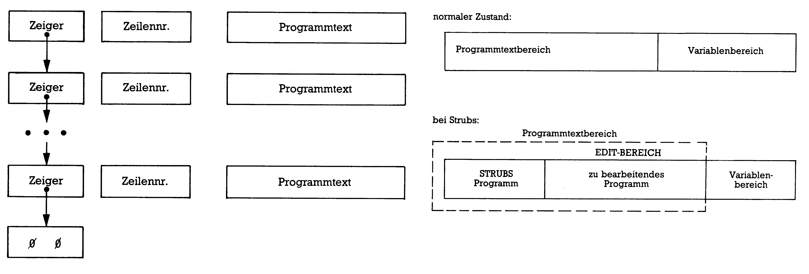
Bild 1. Struktur eines Basic-Programms und dessen Lage im Arbeitsspeicher
TODO
Bild 2. Interpreter-Erweiterung
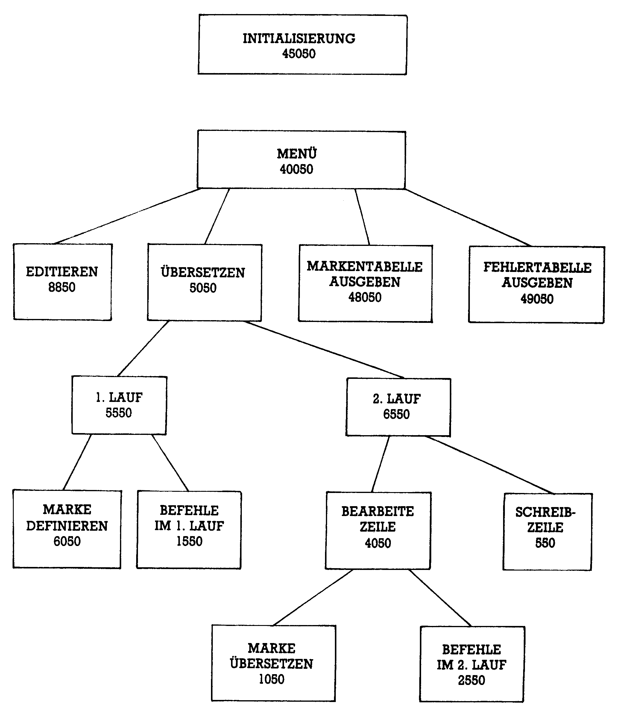
Bild 3. Aufbau von Strubs
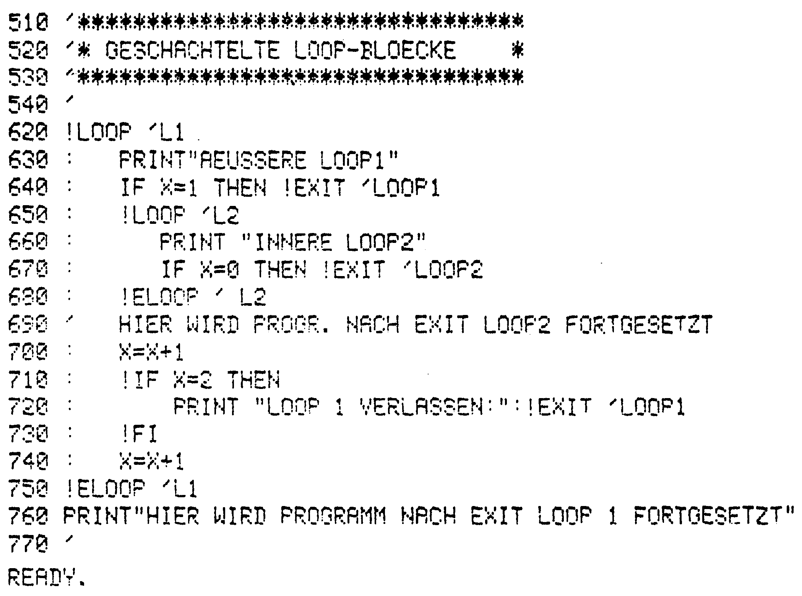
Bild 4. Geschachtelte Loop-Schleife
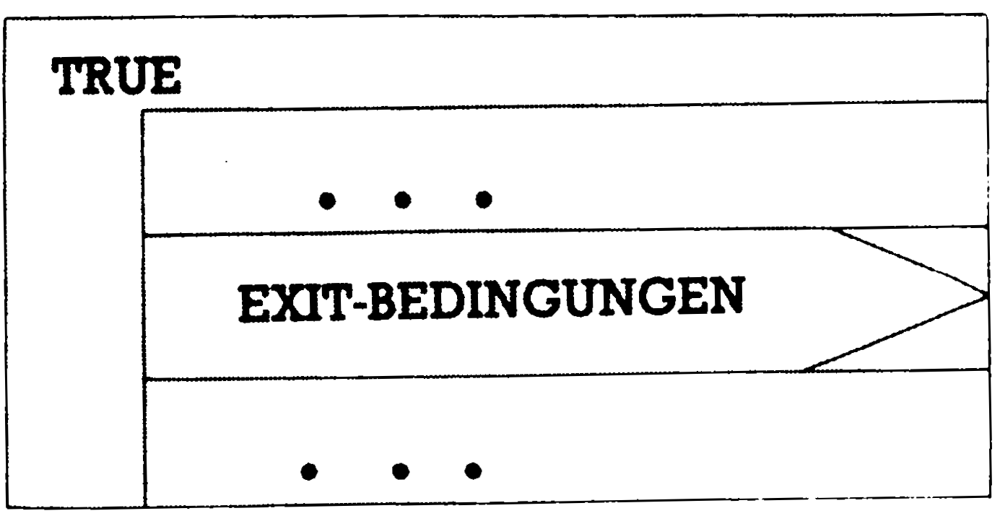
Bild 5. Struktogramm der Loop-Schleife
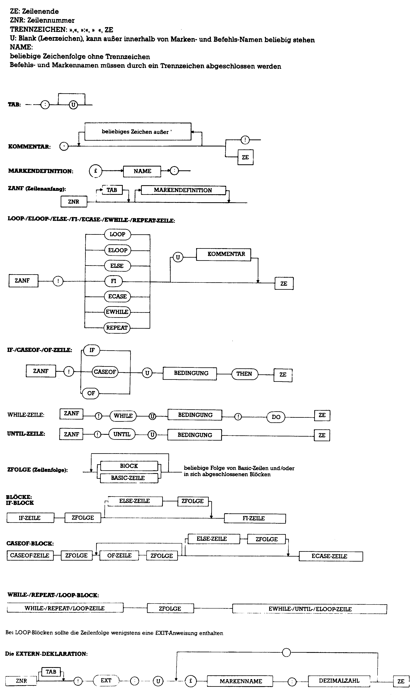
Bild 6. Syntaxdiagramme der Befehle
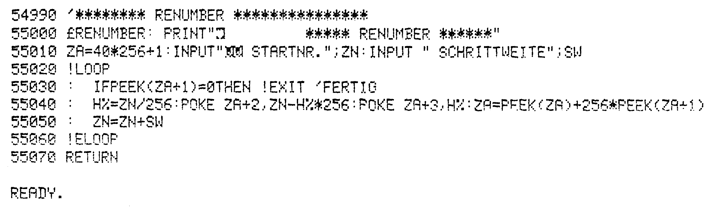
Bild 7. Das Quellprogramm des RENUMBER-Befehls
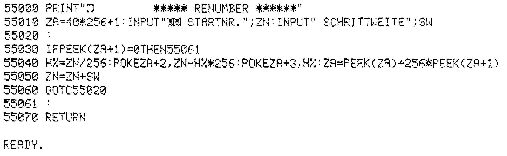
Bild 8. Das von Strubs erzeugte Objektprogramm. Wie es in Strubs einzufügen ist, steht auf Seite 107.
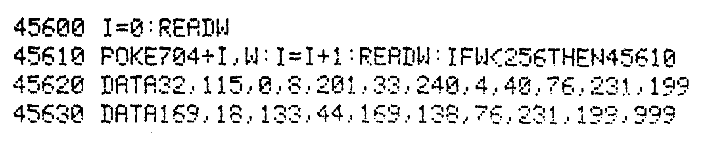
Bild 9. Diese Änderungen sind für die Anpassung von Strubs an den VC 20 (mit mindestens 16 KByte Erweiterung) erforderlich
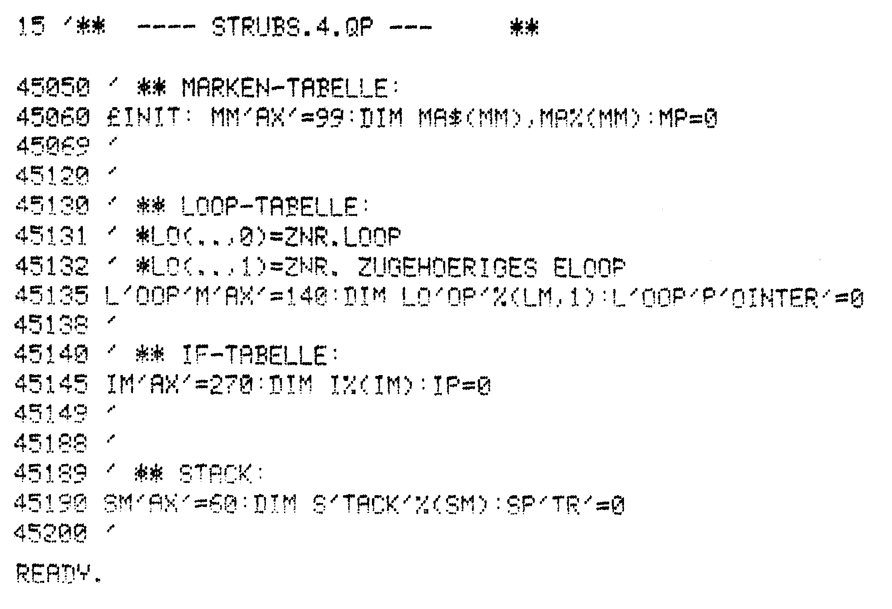
Bild 10. Tabellen
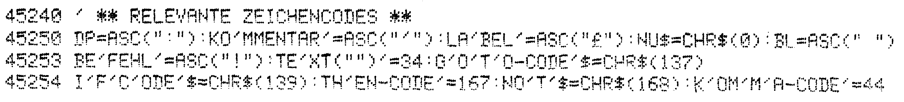
Bild 11. Relevante Zeichencodes
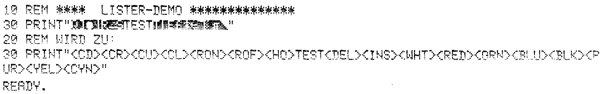
Bild 12. Beispiellister
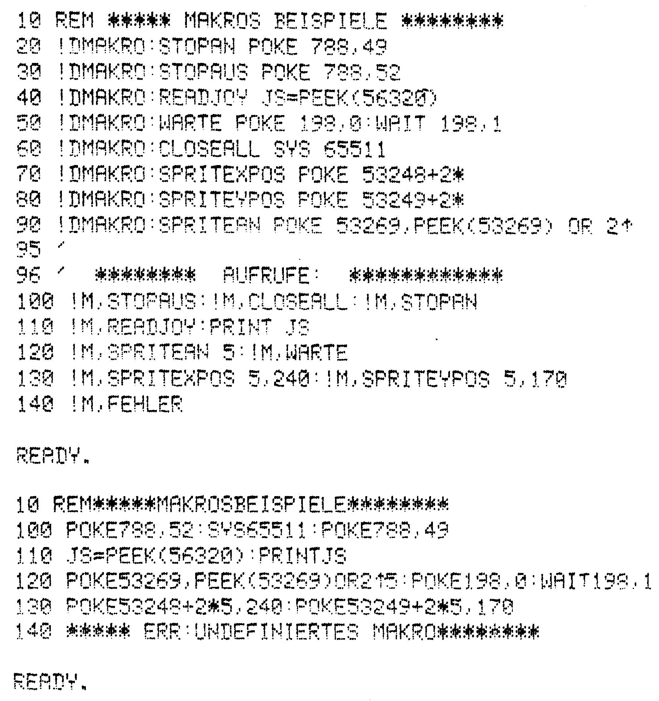
Bild 13. Beispiele Makros
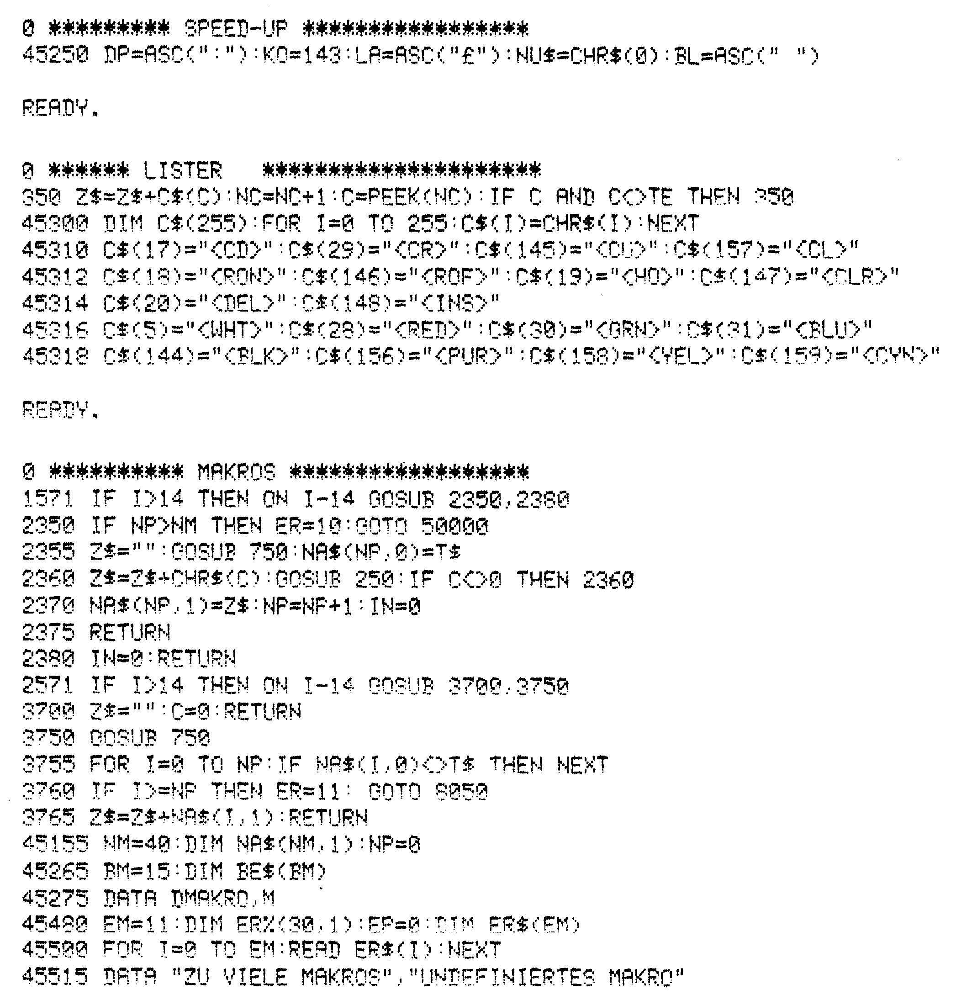
Bild 14. Die besprochenen Erweiterungen auf einen Blick
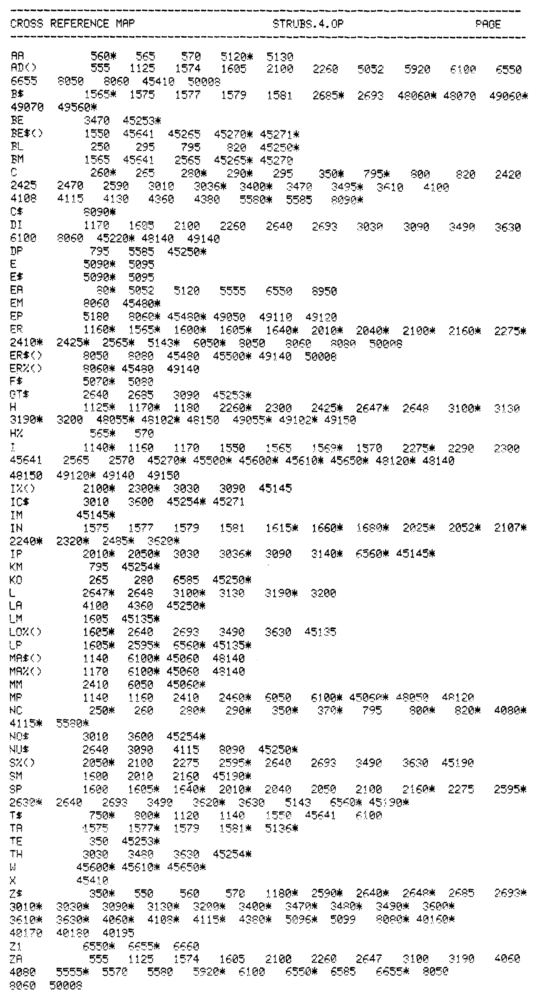
Bild 15. Variablenliste
TODO 84/4, p.110
TODO 84/5, p.116
TODO 84/6, p.128
TODO 84/7, p.154
Listing 1. Das Objektprogramm Strubs. Bitte beachten Sie die Eingabehinweise auf Seite 16.
 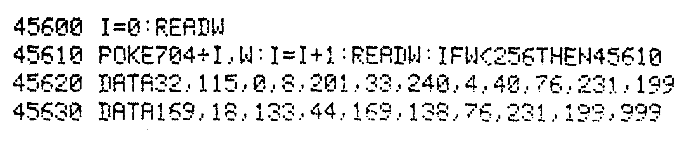
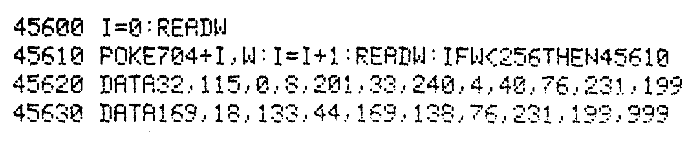